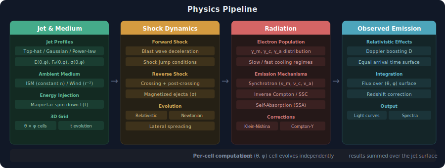

GRB Afterglow Physics
{kind=link}
Introduction
Gamma-ray bursts (GRBs) are among the most energetic astrophysical transients in the universe. They are often associated with:
Mergers of compact objects (e.g., binary neutron stars, neutron star-black hole systems)
Massive star collapses (collapsar model)
The multi-wavelength afterglow emission provides crucial insights into:
The structure of relativistic jets
The surrounding environment
The underlying shock physics
VegasAfterglow offers a comprehensive modeling framework for GRB afterglows with unprecedented flexibility and computational efficiency. This document outlines the key physical processes implemented in the framework, starting with jet and medium properties, followed by shock dynamics, and finally radiation mechanisms.
Jets and Medium
The properties of the relativistic outflow and the ambient medium are foundational to any afterglow model. VegasAfterglow employs a flexible approach to represent diverse jet structures and environmental conditions.
VegasAfterglow solves the afterglow emission on a 3D grid of spherical coordinates \((t, \theta, \phi)\), where:
\(t\) is the observation time for an on-axis observer
\(\theta\) is the polar angle
\(\phi\) is the azimuthal angle
The jet is modeled as a relativistic outflow with profiles for:
Lorentz factor \(\Gamma_{0}(\phi, \theta)\)
Energy \(\frac{dE}{d\Omega}(\phi, \theta)\)
Magnetization \(\sigma(\phi,\theta)\)
In the afterglow calculation, the jet is decomposed into a grid of elements on \(\theta\) and \(\phi\), with each jet element evolving independently.
Jet Profiles
VegasAfterglow supports arbitrary user-defined jet profiles, with several common models built-in:
- Top-hat Jet
The simplest jet profile, with constant parameters within a certain opening angle \(\theta_{\rm c}\) and zero outside:
\[\begin{split}\Gamma_{0}(\phi, \theta) = \begin{cases} \Gamma_{\rm 0}, & \theta\leq\theta_{\rm c} \\ 1, & \theta>\theta_{\rm c} \end{cases}\end{split}\]\[\begin{split}\frac{dE}{d\Omega}(\phi, \theta) = \begin{cases} \frac{E_{\rm iso}}{4\pi}, & \theta\leq\theta_{\rm c} \\ 0, & \theta>\theta_{\rm c} \end{cases}\end{split}\]\[\begin{split}\sigma(\phi, \theta) = \begin{cases} \sigma_{\rm 0}, & \theta\leq\theta_{\rm c} \\ 0, & \theta>\theta_{\rm c} \end{cases}\end{split}\]- Gaussian Jet
A jet profile with Gaussian distribution:
\[\Gamma_{0}(\phi, \theta) = (\Gamma_{\rm 0}-1)\exp\left(-\frac{\theta^{2}}{2\theta_{\rm c}^{2}}\right)+1\]\[\frac{dE}{d\Omega}(\phi, \theta) = \frac{E_{\rm iso}}{4\pi}\exp\left(-\frac{\theta^{2}}{2\theta_{\rm c}^{2}}\right)\]\[\sigma(\phi, \theta) = \sigma_{\rm 0}\]- Power-law Jet
A jet profile with power-law distribution:
\[\Gamma_{0}(\phi, \theta) = (\Gamma_{\rm 0}-1)\left(1+\frac{\theta}{\theta_{\rm c}}\right)^{-k}+1\]\[\frac{dE}{d\Omega}(\phi, \theta) = \frac{E_{\rm iso}}{4\pi}\left(1+\frac{\theta}{\theta_{\rm c}}\right)^{-k}\]\[\sigma(\phi, \theta) = \sigma_{\rm 0}\]
Energy Injection
Energy injection is crucial for modeling afterglow emission of GRBs that show plateau features. VegasAfterglow provides arbitrary user-defined energy injection profiles \(L_{\rm inj}(\phi, \theta, t)\).
A common model is the magnetar spin-down model, approximated as an isotropic power-law decay function:
where \(\sigma = \infty\) assumes an ideal Poynting-flux dominated wind with no matter injection.
Ambient Medium
The properties of the circumburst environment significantly influence afterglow evolution. The ambient medium can be user-defined through functions \(m(\phi,\theta, r)\) and \(\rho(\phi, \theta, r)\). Two standard models are:
Homogeneous Medium (ISM)
where \(n_{0}\) is the number density of the interstellar medium.
Wind-like Medium
where \(A\) is related to the mass-loss rate and \(k\) is the wind profile index (typically 2 for a stellar wind).
Shock Dynamics
As the relativistic jet propagates through the ambient medium, it drives a shock wave that accelerates particles and amplifies magnetic fields. Understanding the dynamics of these shocks is crucial for accurate afterglow modeling.
Shock Jump Conditions
The fundamental physical principles governing the behavior of relativistic shocks are formulated through the shock jump conditions, which relate quantities across the shock discontinuity.
In the rest frame of the shock, the continuity equation is:
where:
\(n_{\rm u}\) and \(n_{\rm d}\) are the proton number density in the upstream and downstream
\(u_{\rm us}\) and \(u_{\rm ds}\) are the four-velocities
Combined with magnetic flux conservation, energy conservation, and enthalpy conservation across the shock front, one can derive:
where:
The solution for \(u_{\rm ds}^2\) can be derived as:
where:
For unmagnetized upstream where \(\sigma_{\rm u}=0\), the solution simplifies to:
and the density compression ratio becomes:
The internal energy density generated in the downstream due to shock heating is:
The downstream co-moving magnetic field is given by:
where \(B_{\rm d, o}\) is the ordered magnetic field and \(B_{\rm d, w}\) is the unordered magnetic field generated by Weibel instability, with \(\epsilon_{\rm B}\) being the magnetic energy fraction.
The general magnetic energy fraction can be approximated as:
Shock Lorentz Factor
The evolution of the shock’s Lorentz factor determines the energy dissipation rate and consequently the afterglow light curve properties. For a given relative Lorentz factor \(\Gamma_{\rm ud}\) between upstream and downstream, the shock jump conditions provide the downstream proton number density \(n_{\rm d}\) and co-moving magnetic field \(B_{\rm d}\) required for radiation calculations.
The relative Lorentz factor is given by:
where \(\Gamma_{\rm u}\) and \(\Gamma_{\rm d}\) are the Lorentz factors of the upstream and downstream regions.
Reverse Shock Crossing
When the relativistic jet encounters the ambient medium, a two-shock structure forms: a forward shock propagating into the medium and a reverse shock moving back into the jet material. This phase is crucial for early afterglow emission.
As the jet collides with the ambient medium, a forward shock and reverse shock pair is generated (if reverse shock conditions are met). These shocks divide the system into four regions:
Unshocked medium (upstream of forward shock)
Shocked medium (downstream of forward shock)
Shocked jet (downstream of reverse shock)
Unshocked jet (upstream of reverse shock)
During the reverse shock crossing phase, we need to combine the shock jump conditions of forward and reverse shocks. For the forward shock:
where \(n_1\) is the ambient medium density and \(\Gamma_{12}\) is the relative Lorentz factor between regions 1 and 2.
For the reverse shock:
where:
with \(\Delta^\prime\) being the shock width in the co-moving frame.
The force balance at the discontinuity gives:
Combining these equations, we get:
Since \(\Gamma_1\), \(\Gamma_4\), \(n_1\) and \(n_4\) are known, and \(\Gamma_2=\Gamma_3\), we can solve for \(\Gamma_2\) during the reverse shock crossing phase.
If the pressure in region 4 (unshocked jet) is too strong, the reverse shock cannot form. The reverse shock generation condition is:
For energy conservation during long-lasting reverse shock crossings, VegasAfterglow implements an effective mechanical model. The total energy as the blast wave propagates to radius \(r\) should be:
The total energy in regions 2, 3, and 4 is:
where:
Using energy conservation and particle number conservation:
And with \(\Gamma_3=\Gamma_2=\Gamma_{21}\), we get:
The shocked proton number \(N_3\) can be expressed as:
The reverse shock completely crosses the jet when:
where \(r_x\) is the crossing radius.
Post-Reverse Shock Crossing Phase
Once the reverse shock completely traverses the jet material, the dynamics enter a new regime characterized by adiabatic expansion and gradual deceleration. This phase is essential for modeling the mid-to-late afterglow emission.
After the reverse shock has fully crossed the jet (\(N_3 = N_{4,0}\)), the shocked jet material enters the post-crossing phase. In this phase, the dynamics follow a self-similar solution that smoothly transitions from the Newtonian regime to the relativistic Blandford-McKee solution.
The dynamics for both the forward and reverse shocks need to be treated separately after crossing.
Forward Shock Dynamics
The forward shock continues to propagate into the ambient medium and is governed by energy conservation in the blast wave. VegasAfterglow carefully accounts for pressure, radiation, and adiabatic expansion:
where \(E_{\rm jet}=\Gamma_{2}M_{0}c^{2}\) with \(M_{0}\) the equivalent initial rest mass of the jet, \(m\) is the total collected mass, \(m_{\rm inj}\) is the injected mass, \(U\) is the internal energy in the blast wave, \(dU_{\rm sh}\) is increased internal energy due to shock heating, \(dU_{\rm ad}\) is the lost internal energy due to adiabatic expansion, \(dU_{\rm rad}\) is lost internal energy due to radiation, and \(L_{\rm inj}\) is the injection luminosity.
These quantities are defined as:
The blast wave equation for \(\Gamma_2\) evolution can then be written as:
Reverse Shock Dynamics
For the reverse shock, the four-velocity evolution in the post-crossing phase follows a power-law profile:
where \(u_x\) is the four-velocity at the crossing radius \(r_x\), and \(g\) is the power-law index that depends on the relative Lorentz factor \(\Gamma_{\rm rel}\).
The scaling laws after reverse shock crossing vary between thin and thick shell regimes:
Thin Shell Regime (Newtonian reverse shock):
\[\begin{split}n_3 &\propto r^{-\frac{2(3+g)}{\hat\gamma_{43}+1}}\\ p_3 &\propto r^{-\frac{2(3+g)\hat\gamma_{43}}{\hat\gamma_{43}+1}}\\ \frac{p_3}{n_3} &\propto r^{-\frac{2(3+g)(\hat\gamma_{43}-1)}{\hat\gamma_{43}+1}}\end{split}\]Thick Shell Regime (Relativistic reverse shock):
Before shell expansion:
\[\begin{split}n_3 &\propto r^{-2}\\ p_3 &\propto r^{-2\hat\gamma_{43}}\\ \frac{p_3}{n_3} &\propto r^{2(1-\hat\gamma_{43})}\end{split}\]After shell expansion:
\[\begin{split}n_3 &\propto r^{-(3+g)}\\ p_3 &\propto r^{-(3+g)\hat\gamma_{43}}\\ \frac{p_3}{n_3} &\propto r^{(3+g)(1-\hat\gamma_{43})}\end{split}\]
The power-law index \(g\) transitions smoothly between different regimes:
with:
For a homogeneous medium (ISM), \(g_{\rm low} = 1.5\) in the Newtonian regime, and \(g_{\rm high} = 3.5\) in the ultra-relativistic regime (Blandford-McKee limit).
The shell width evolution is also important for determining the dynamics:
where \(c_s\) is the sound speed in the co-moving frame:
The post-crossing evolution preserves the total number of electrons (particle number conservation):
which leads to:
The pressure evolves according to adiabatic expansion:
which gives:
The average electron Lorentz factor in region 3 (used for synchrotron radiation calculation) is:
This detailed treatment of post-crossing dynamics allows VegasAfterglow to accurately model the afterglow emission from the earliest phases through the transition to the self-similar regime and into the non-relativistic phase.
Jet Spreading
As the jet propagates and decelerates, it also expands laterally. This lateral spreading significantly affects the observed light curve, particularly for off-axis observers.
VegasAfterglow models lateral expansion of the jet through:
where \(u = \Gamma\beta\) and \(\frac{dr}{dt} = \beta c/(1-\beta)\).
Radiation Processes
The observed afterglow emission arises from various radiation mechanisms as relativistic particles interact with magnetic fields and ambient photons. VegasAfterglow implements detailed treatments of these processes to generate accurate multi-wavelength light curves.
Electron Population
Particle acceleration at relativistic shocks produces a non-thermal distribution of electrons, which are the primary emitters in the afterglow.
In relativistic shocks, the dissipation of kinetic energy accelerates particles to relativistic energies. The comoving internal energy density behind the shock is:
where \(n_p\) is the downstream proton number density.
A fraction of this energy goes to magnetic fields:
And to non-thermal electrons:
where \(\bar\gamma\) is the average Lorentz factor of the accelerated electrons.
The electron energy distribution typically follows a power law:
where \(\gamma_m\) and \(\gamma_M\) are the minimum and maximum Lorentz factors.
The minimum Lorentz factor \(\gamma_m\) can be determined from the energy equations:
where \(\xi = \frac{n_e}{n_p}\) is the electron-to-proton number ratio.
The cooling of electrons due to synchrotron radiation and inverse Compton scattering is described by:
where \(\tilde{Y}\) is the Compton Y-parameter that accounts for the inverse Compton cooling.
The cooling time is:
The cooling Lorentz factor \(\gamma_c\) is then:
The self-absorption frequency \(\nu_a\) defines where synchrotron photons are self-absorbed. It can be derived as the intersection point between synchrotron and blackbody spectra:
The absorption Lorentz factor \(\gamma_a\) is given by:
where:
The electron distribution function depends on the ordering of characteristic Lorentz factors. For slow cooling with weak absorption (\(\gamma_a<\gamma_m<\gamma_c\)):
For fast cooling with weak absorption (\(\gamma_a<\gamma_c<\gamma_m\)):
Synchrotron Radiation
The characteristic synchrotron emission frequency is:
The synchrotron spectrum is approximated as a multi-segment broken power law, with different forms depending on the ordering of key frequencies:
\(\nu_a\) - self-absorption frequency
\(\nu_m\) - characteristic frequency of minimum energy electrons
\(\nu_c\) - cooling frequency
These define different regimes (e.g., slow cooling with \(\nu_m < \nu_c\) or fast cooling with \(\nu_c < \nu_m\)).
Below are the functional forms for various spectral regimes:
(I) Slow cooling with weak absorption (\(\nu_a<\nu_m<\nu_c\)):
(II) Slow cooling with weak absorption (\(\nu_m<\nu_a<\nu_c\)):
(III) Fast cooling with weak absorption (\(\nu_a<\nu_c<\nu_m\)):
(IV) Fast cooling with strong absorption (\(\nu_c<\nu_a<\nu_m\)):
where \(\mathcal{R}_4=\frac{\gamma_c}{3\gamma_a}\)
(V) Slow cooling with strong absorption (\(\nu_m<\nu_c<\nu_a\)):
where \(\mathcal{R}_5=(p-1)\frac{\gamma_c}{3\gamma_a}\left(\frac{\gamma_m}{\gamma_a}\right)^{p-1}\)
(VI) Fast cooling with strong absorption (\(\nu_c<\nu_m<\nu_a\)):
where \(\mathcal{R}_6=\frac{\gamma_c}{3\gamma_a}\left(\frac{\gamma_m}{\gamma_a}\right)^{p-1}\)
Inverse Compton Process
Inverse Compton (IC) scattering is modeled through:
where \(\sigma_c\) is the Klein-Nishina cross-section, accounting for the quantum effects at high energies:
The IC cooling affects the electron distribution. Defining \(\hat\gamma_i=\frac{m_ec^2}{h\nu_i}\), the modified electron distribution due to IC cooling is:
For \(\hat\gamma_m<\hat\gamma_c\) (corresponding to \(\nu_m > \nu_c\)):
For \(\hat\gamma_c<\hat\gamma_m\) (corresponding to \(\nu_c > \nu_m\)):
The synchrotron spectrum is also modified by IC cooling:
For \(\hat\nu_m<\hat\nu_c\):
For \(\hat\nu_c<\hat\nu_m\):
Observed Emission
The final step in afterglow modeling is translating the emission properties in the comoving frame to the observer frame, accounting for relativistic effects and geometry.
The observed emission depends on geometry and relativistic effects. For a given observer angle, the Doppler factor is:
where \(\cos w = \sin\theta\cos\phi\sin\theta_v+\cos\theta\cos\theta_v\).
The observed time is:
And the observed flux:
where \(\nu^\prime = \frac{1+z}{\mathcal{D}}\nu\).
References
For detailed exploration of GRB afterglow physics, see: